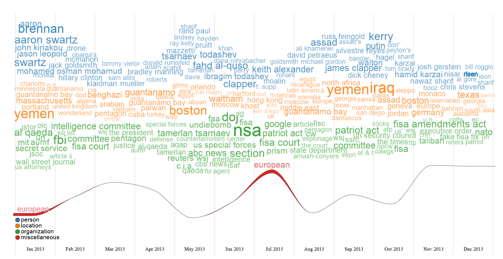

wordstreamr provides a flexible data processing pipeline to extract and prepare text from sources like PDF files. This includes functionalities for term extraction (n-grams), stemming, and stopword filtering. Optionally, it can leverage Large Language Models (LLMs) for advanced, automated categorization of the identified terms.
O objetivo do wordstreamr é criar visualizações ‘WordStream’ como htmlwidgets para ilustrar a evolução de tópicos ao longo do tempo.
Cria visualizações ‘WordStream’ como ‘htmlwidgets’ para ilustrar a evolução de tópicos ao longo do tempo. O pacote oferece um pipeline flexível de processamento de dados para extrair e preparar texto a partir de fontes como arquivos PDF. Isto inclui funcionalidades para extração de termos (n-grams), radicalização (stemming) e filtragem de stopwords. Opcionalmente, pode utilizar Modelos de Linguagem Grandes (LLMs) para a categorização avançada e automática dos termos identificados.

Exemplo de uma visualização WordStream gerada com o pacote.
Key Features
-
wordstream(): A principal função de visualização que aceita dados pré-formatados e renderiza um htmlwidget interativo. -
prepare_wordstream_data(): Uma função auxiliar para converter data frames em formato “tidy” para a estrutura de lista aninhada exigida pela visualização. -
process_pdfs_for_wordstream(): Um pipeline completo de NLP para usuários que começam com uma coleção de documentos PDF. Extrai texto e datas, identifica termos relevantes e os prepara para análise. -
LLM Integration: Capacidade opcional de usar LLMs (via
ollamarouchatLLM) para categorizar automaticamente os termos extraídos por tema, Part-of-Speech (POS) ou Named-Entity Recognition (NER).
Installation
Você pode instalar a versão de desenvolvimento do wordstreamr a partir do GitHub com:
# install.packages("devtools")
devtools::install_github("seu-usuario-github/wordstreamr")Workflow Básico
O pacote foi projetado para desacoplar o processamento de dados da visualização. O fluxo de trabalho típico envolve preparar seus dados primeiro e depois passá-los para a função de visualização.
1. Preparar os Dados
Primeiro, você precisa de um data frame em formato “tidy”, onde cada linha representa uma palavra (ou termo) em um determinado momento e pertencente a um grupo.
library(wordstreamr)
library(dplyr)
#>
#> Attaching package: 'dplyr'
#> The following objects are masked from 'package:stats':
#>
#> filter, lag
#> The following objects are masked from 'package:base':
#>
#> intersect, setdiff, setequal, union
library(tibble)
# Criar um corpus de exemplo em formato tidy
set.seed(123)
tidy_corpus <- tibble(
Semana = rep(c("Semana 1", "Semana 2", "Semana 3", "Semana 4"), each = 50),
Termo = sample(c("dados", "visualização", "análise", "projeto", "ciência", "curso", "novo", "bom", "api", "relatório"), 200, replace = TRUE),
Categoria = sample(c("Técnico", "Negócios"), 200, replace = TRUE, prob = c(0.7, 0.3))
)
head(tidy_corpus)
#> # A tibble: 6 × 3
#> Semana Termo Categoria
#> <chr> <chr> <chr>
#> 1 Semana 1 análise Negócios
#> 2 Semana 1 análise Negócios
#> 3 Semana 1 relatório Técnico
#> 4 Semana 1 visualização Técnico
#> 5 Semana 1 curso Negócios
#> 6 Semana 1 ciência NegóciosEm seguida, use a função prepare_wordstream_data() para contar as frequências e formatar os dados para a visualização.
# Converter o data frame para o formato de lista aninhada
prepared_data <- prepare_wordstream_data(
data = tidy_corpus,
time_col = "Semana",
group_col = "Categoria",
word_col = "Termo",
top_n = 50 # Manter os 50 termos mais comuns por grupo/semana
)2. Gerar a Visualização
Finalmente, passe os dados preparados para a função wordstream().
# Gerar o htmlwidget
wordstream(
data = prepared_data,
width = "100%",
height = "600px",
max_font_size = 50
)Este código irá renderizar a visualização WordStream diretamente no seu visualizador do RStudio, em um notebook R Markdown ou em uma aplicação Shiny.
Fluxo de Trabalho Avançado: De PDFs à Visualização
Para usuários que começam com uma coleção de documentos, a função process_pdfs_for_wordstream() automatiza a extração e análise.
O exemplo abaixo mostra um fluxo de trabalho conceitual. Para executá-lo, você precisaria de uma pasta chamada "meus_pdfs/" com arquivos PDF dentro e um provedor de LLM configurado (como o Ollama rodando localmente).
# Passo 1: Processar uma pasta de PDFs, extrair termos e categorizá-los
# usando um LLM para Named-Entity Recognition (NER).
tidy_terms_from_pdfs <- process_pdfs_for_wordstream(
folder_path = "meus_pdfs/",
language = "pt",
ngram_range = 1:2, # Extrai palavras e bigramas
top_n_words = 200,
categories = "ner", # Usa o LLM para categorizar como Pessoa, Organização, etc.
llm_provider = "ollamar"
)
# O resultado é um data frame tidy pronto para o próximo passo
# Colunas: term, frequency, category
# Passo 2: Preparar os dados para a visualização
# Note que as colunas já têm os nomes esperados
prepared_pdf_data <- prepare_wordstream_data(
data = tidy_terms_from_pdfs,
time_col = "date", # A função extrai a data do PDF
group_col = "category", # A categoria foi criada pelo LLM
word_col = "term"
)
# Passo 3: Visualizar o resultado
wordstream(
data = prepared_pdf_data,
height = "800px"
)Este fluxo de trabalho demonstra o poder do pacote para transformar documentos não estruturados em uma visualização interativa com poucas linhas de código.